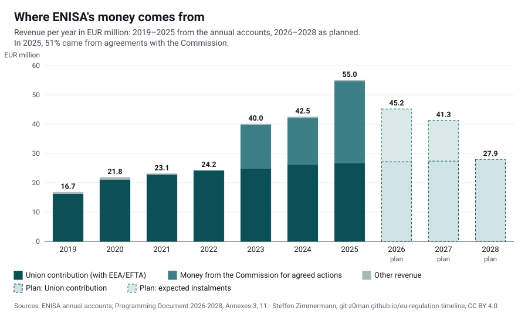
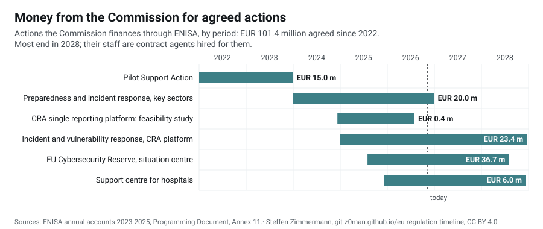
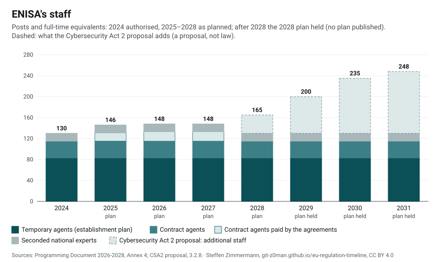
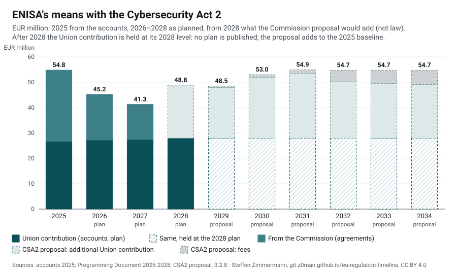

Regulations › Authorities › ENISAas of 5 Nov 2026
European Union Agency for Cybersecurity (ENISA)
The EU's agency for cybersecurity, set up in 2004 and given a permanent mandate by the Cybersecurity Act in 2019. It supports the Member States and the EU institutions in implementing NIS-2, the Cyber Resilience Act and the Cyber Solidarity Act, prepares the European cybersecurity certification schemes and runs the EU vulnerability database and the CRA single reporting platform. The Commission's proposal for a Cybersecurity Act 2 would replace its mandate.
EUR 55.0 million, 51% of it from the Commission
Union contribution EUR 26.7 million; agreements with the Commission for agreed actions EUR 28.1 million; of the money for those actions available in 2025, 15% was paid out by the end of the year.
On this page
Our analyses
- Analysis · 5 Nov 2026Is ENISA equipped for its tasks? Half its money is temporary, and the Cybersecurity Act 2 would mainly make it permanentENISA's own budget has grown little since 2022 while the acts giving it tasks multiplied. The growth came from time-limited agreements with the Commission: in 2025 they paid 51 % of its revenue, and they run out in 2028. The Commission's proposal for a Cybersecurity Act 2 would turn much of that money into a permanent budget, but adds little on top, and its timing, the next EU budget and the fees are open. (also in German: Ist ENISA für ihre Aufgaben gerüstet? Die Hälfte ihres Geldes ist befristet, und der Cybersecurity Act 2 würde es vor allem verstetigen)
Finances
Two sources of money: the Union contribution in the EU budget, which the budgetary authority sets each year, and money the Commission gives the agency for actions agreed with it (contribution agreements, mostly from the Digital Europe Programme), kept apart in the budget (Title 4) and spent over several years. The amounts are revenue of the year as in the budget outturn account of the annual accounts.



The figures as a table
| Year | Union contribution | From the Commission | Other | Total |
|---|---|---|---|---|
| 2019 | 16.3 | 0.0 | 0.4 | 16.7 |
| 2020 | 21.1 | 0.0 | 0.7 | 21.8 |
| 2021 | 22.8 | 0.0 | 0.2 | 23.1 |
| 2022 | 24.2 | 0.0 | 0.0 | 24.2 |
| 2023 | 24.9 | 15.0 | 0.1 | 40.0 |
| 2024 | 26.2 | 16.0 | 0.3 | 42.5 |
| 2025 | 26.7 | 28.1 | 0.2 | 55.0 |
| 2026 (plan) | 27.2 | 18.0 | – | 45.2 |
| 2027 (plan) | 27.4 | 13.8 | – | 41.3 |
| 2028 (plan) | 27.9 | 0.0 | – | 27.9 |



The figures as a table
| Signed | Action | Amount (EUR million) | Period | Received |
|---|---|---|---|---|
| 2022 | Pilot Cybersecurity Support Action | 15.00 | 2022-2023 | EUR 12 million in 2023, EUR 3 million in 2024 |
| 21 Dec 2023 | Preparedness and Incident Response Support for Key Sectors (Support Action, Cyber Situation and Analysis Centre) | 20.00 | 2024-2026 | EUR 16 million in 2024 |
| 9 Dec 2024 | Feasibility study for the CRA single reporting platform | 0.40 | until 31 Jul 2026 | EUR 240 000 in March 2025 |
| 19 Dec 2024 | Incident and Vulnerability Response Support and Reporting (Support Action, Cyber Situation and Analysis Centre, CRA single reporting platform) | 23.35 | 2025-2028 (extended to 18 Dec 2028) | EUR 12 million in May 2025 |
| 31 Jul 2025 | EU Cybersecurity Reserve and Cyber Situation and Analysis Centre | 36.67 | 2025-2028 | EUR 12 223 333 in September 2025 |
| 8 Dec 2025 | European Cybersecurity Support Centre for hospitals and healthcare providers | 6.00 | 36 months | EUR 3.6 million in December 2025 |
2022: The EUR 15 million of the pilot Cybersecurity Support Action were granted in 2022 and recognised as revenue in 2023 (EUR 12 million received, EUR 3 million due in 2024; acc2023, 3.5.10).
2023: Commission subsidy EUR 36 906 506 received plus EUR 3 000 000 due in 2024; EUR 15 million of it for the pilot Cybersecurity Support Action.
Plan: Contribution agreements are not part of the adopted budget; the instalments are those Annex 11 of the programming document expects for the agreements signed by July 2025 (EUR 72.32 million in all). The agreements of December 2025 (hospitals, EUR 6 million; third amendment of the 2024 agreement, up to EUR 8.1 million) came later.
Incident and vulnerability response, CRA platform: EUR 15 million, plus EUR 250 000 on 3 Jul 2025 (CRA implementation: technical specifications, standards, interplay with certification) and up to EUR 8.1 million on 11 Dec 2025
Support centre for hospitals: The accounts date the agreement 8 December 2025 in 4.4.4 and 16 December 2025 in 4.4.
Staff



The figures as a table
| Year | Temporary agents | Contract agents | of them paid by agreements | Seconded experts | Total | CSA2: additional |
|---|---|---|---|---|---|---|
| 2024 (authorised) | 83 | 32 | 0 | 15 | 130 | – |
| 2025 (plan) | 83 | 48 | 16 | 15 | 146 | – |
| 2026 (plan) | 83 | 50 | 18 | 15 | 148 | – |
| 2027 (plan) | 83 | 50 | 18 | 15 | 148 | – |
| 2028 (plan) | 83 | 32 | 0 | 15 | 130 | 35 |
| 2029 (plan held) | 83 | 32 | 0 | 15 | 130 | 70 |
| 2030 (plan held) | 83 | 32 | 0 | 15 | 130 | 105 |
| 2031 (plan held) | 83 | 32 | 0 | 15 | 130 | 118 |
Contract agents financed by the contribution agreements (16 in 2025, 18 in 2026 and 2027) end with them; the programming document envisages 130 staff for 2028, as many as were authorised in 2024. In 2024 the agency also had 19 structural service providers (security, IT, facilities) and 12 interim workers.
Outlook: the Cybersecurity Act 2
The Commission proposal of 20 January 2026 is a proposal, not law; Parliament and Council are negotiating it. Its financial statement gives the additional means per year from 2028, on top of the agency's 2025 budget.



The figures as a table
| Year | Union contribution | From the Commission | CSA2: additional | CSA2: fees | Total |
|---|---|---|---|---|---|
| 2025 (accounts) | 26.7 | 28.1 | 0.0 | 0.0 | 54.8 |
| 2026 (plan) | 27.2 | 18.0 | 0.0 | 0.0 | 45.2 |
| 2027 (plan) | 27.4 | 13.8 | 0.0 | 0.0 | 41.3 |
| 2028 (plan) | 27.9 | 0.0 | 20.9 | 0.0 | 48.8 |
| 2029 (held, proposal) | 27.9 | 0.0 | 20.1 | 0.5 | 48.5 |
| 2030 (held, proposal) | 27.9 | 0.0 | 24.0 | 1.0 | 53.0 |
| 2031 (held, proposal) | 27.9 | 0.0 | 25.4 | 1.5 | 54.9 |
| 2032 (held, proposal) | 27.9 | 0.0 | 22.2 | 4.6 | 54.7 |
| 2033 (held, proposal) | 27.9 | 0.0 | 21.6 | 5.2 | 54.7 |
| 2034 (held, proposal) | 27.9 | 0.0 | 21.2 | 5.7 | 54.7 |
The explanatory memorandum puts ENISA's whole budget for 2028-2034 at EUR 341 million (EUR 49 million a year on average, 81.5 % more than in 2025) and the additional staff at 118 full-time equivalents; the additional means would also cover tasks financed today by contribution agreements, such as the maintenance of the single reporting platform and the staff of the EU Cybersecurity Reserve. The appropriations are to be compensated by redeployment from programmes of the 2028-2034 multiannual financial framework, "without prejudice to the negotiations".
The 118 additional staff from 2031: 31 temporary agents, 74 contract agents and 13 seconded national experts.
Contracts awarded
ProcurementContract award notices of ENISA as the only buyer on Tenders Electronic Daily, the last two years: 30 of 78 since 1 Jan 2019. The value is the maximum of a framework contract or the contract value as the notice gives it, not what was paid; values of notices on the same procedure overlap and are not added up. Joint procurements of many EU bodies are left out (39). Checked 9 Nov 2026.
| Published | Contract | EUR million | Contractors |
|---|---|---|---|
| 23 Oct 2026 | Exceptional Negotiated procedure for 50% Increase of ENISA F-EDO-23-C18 Contract Ceiling | 0.75 | MISSING ELEMENT SPOL SRO |
| 3 Jul 2026 | Supporting ENISA for the provision of cybersecurity services to Bulgaria, Malta, Netherlands and Poland LOTS 1-4 | 0.90 | GMV-SGI, CERTSIGN, SPAN D.D. |
| 19 Jun 2026 | Supporting ENISA for the provision of cybersecurity services to Moldova and Ukraine | 0.50 | named in the notice |
| 16 Jun 2026 | Supporting ENISA for the provision of cybersecurity services to Bulgaria, Malta, Netherlands and Poland LOTS 1-4 | 0.90 | UNISYSTEMS LUXEMBOURG SARL, NVISO Belgium BV, GMV-SGI, DUKAT ORB S.L. |
| 11 May 2026 | Support services in relation to monitoring, analyses and evaluation of Cybersecurity legal framework, policies and strategies | 0.45 | Wavestone SA, CEPS, ECSO, FORWARD GLOBAL, SAS IDATE, SCHUMAN ASSOCIATES SCRL, CAPGEMINI NEDERLAND BV, SPARK LEGAL AND POLICY CONSULTING BV |
| 29 Apr 2026 | Supporting ENISA for the provision of cybersecurity services to Bulgaria, Malta, Netherlands and Poland LOTS 1-4 | 0.90 | UNISYSTEMS LUXEMBOURG SARL, Efigo Sp. z o.o., DC9 SP ZOO |
| 21 Apr 2026 | Supporting ENISA for the provision of cybersecurity services to Bulgaria, Malta, Netherlands and Poland LOTS 1-4 | 0.90 | Efigo Sp. z o.o., DC9 Sp. z o.o., UniSystems Luxembourg SARL |
| 21 Apr 2026 | Supporting ENISA for the provision of the EU Cybersecurity Reserve services to Union Entities | 1.20 | SPAN D.D., CERTSIGN, NVISO Belgium BV |
| 17 Apr 2026 | Exceptional Negotiated procedure for 50% Increase of ENISA FOCU24C10 LOT 18 | 1.35 | AIRBUS PROTECT SAS |
| 2 Apr 2026 | Design, execution and enablement of cybersecurity studies and cybersecurity market analyses in the EU internal market | 1.47 | IPSOS NV, PWC EU SERVICES, GARTNER FRANCE, Wavestone SA, CEPS, ECSO, KPMG, istari.ai, RESEARCH, ANALYSIS AND STRATEGY INSTITUTE, Cyber Threat Defense, Spyrosoft Solutions S.A. |
| 17 Mar 2026 | Negotiated procedure for 50% Increase of ENISA F-OCU-24-C10 LOT 24 Contract Ceiling | 1.35 | UniSystems Luxembourg SARL |
| 17 Mar 2026 | Exceptional Negotiated procedure for 50% Increase of ENISA F-OCU-24-C10 LOT 27 Contract Ceiling | 1.35 | Reversec Finland Oy |
| 17 Mar 2026 | Exceptional Negotiated procedure for 50% Increase of ENISA F-OCU-24-C10 LOT 2 Contract Ceiling | 1.35 | AIRBUS PROTECT SAS, NVISO Belgium BV |
| 17 Mar 2026 | Exceptional Negotiated procedure for 50% Increase of ENISA F-OCU-24-C10 LOT 6 Contract Ceiling | 1.35 | UniSystems Luxembourg SARL |
| 17 Mar 2026 | Exceptional Negotiated procedure for 50% Increase of ENISA F-OCU-24-C10 LOT 9 Contract Ceiling | 1.35 | Reversec Finland Oy |
| 17 Mar 2026 | Exceptional Negotiated procedure for 50% Increase of ENISA F-OCU-24-C10 LOT 1 Contract Ceiling | 1.35 | AIRBUS PROTECT SAS, Balasys IT Zártkörűen Működő Részvénytársaság, Ukatemi Technologies Zrt., Itsec Area Informatikai és Szolgált Ato Kft |
| 26 Feb 2026 | Design, execution and enablement of cybersecurity studies and cybersecurity market analyses in the EU internal market | 0.12 | RESEARCH, ANALYSIS AND STRATEGY INSTITUTE, Cyber Threat Defense, I-Trusta |
| 8 Jan 2026 | Provision of Physical Security Services | 1.00 | G4S IDIOTIKI EPICHEIRISI PAROCHIS EPANDROMENON - TECHNIKON YPIRESION ASFALEIAS ANONYMI ETAIREIA |
| 11 Dec 2025 | Data Center Colocation Services | 0.45 | UNI SYSTEMS SYSTIMATA PLIROFORIKIS MONOPROSOPI ANONYMI EMPORIKI ETAIRIA |
| 16 Oct 2025 | Supporting ENISA for the provision of cybersecurity services to Moldova and Ukraine | 0.12 | GMV SOLUCIONES GLOBALES INTERNET SAU |
| 22 Sep 2025 | Implementation of the Single Reporting Platform | 11.00 | UniSystems Luxembourg SARL, Luxembourg House of Cybersecurity, Wavestone SA, EUROPEAN DYNAMICS LUXEMBOURG SA, EUROPEAN DYNAMICS ADVANCED INFORMATION TECHNOLOGY AND TELECOMMUNICATION SYSTEMS SA, Netcompany SA |
| 1 Sep 2025 | Development, consultancy, support & maintenance services for IT assets | 15.00 | UNISYSTEMS LUXEMBOURG SARL, EAU DE WEB SRL |
| 24 Jul 2025 | Supporting ENISA for the provision of cybersecurity services to European Union Member States | 13.90 | ADACOM CYBER SECURITY CY LTD, IANUS TECHNOLOGIES LTD, Logicom Solutions Limited, WithSecure Cyber Security Services Oy, Airbus Protect SAS, ANTAKOM - Proigmenes Efarmoges Diadiktiou Anonymos Etairia (ADACOM Advanced Internet Applications S.A.), Next Ingegneria dei Sistemi S.p.A., TINEXTA CYBER SPA, CY4GATE S.p.A., Aizoon Consulting S.r.l., Consorzio Interuniversitario Nazionale per l' Informatica (CINI), UAB NRD CS, S2 Grupo Soluciones de Seguridad S.L., Telekom Slovenije DD, Institut Za Korporativne Varnostne Studije Ljubljana, VIRIS, varnost in razvoj informacijskih sistemov, d.o.o., SSRD, Varnost Programske Opreme, Raziskave In Razvoj, D.O.O., GMV Soluciones Globales Internet SA, CENTRO REGIONAL DE SERVICIOS AVANZADOS S.A, Census Anonymi Etairia Asfaleias PL Iroforiakon Systimaton, Security Reply S.r.l., Spike Reply GmbH |
| 23 Jul 2025 | Supporting ENISA in ensuring Cyber Resilience of the EU | 0.90 | SPYROSOFT SOLUTIONS SPOLKA AKCYJNA, Wavestone SA, TIMELEX BV, BEARINGPOINT FRANCE SAS |
| 11 Jun 2025 | Supporting ENISA for the provision of cybersecurity services to European Union Member States | 11.70 | Airbus Protect SAS, Itsec Area Informatikai és Szolgált Ato Kft, Balasys IT Zártkörűen Működő Részvénytársaság, Ukatemi Technologies Zrt., White Hat IT Security Szolgáltató és Kereskedelmi Korlátolt Felelősségű Társaság, NVISO Belgium BV, Infigo IS doo za računale i srodne djelatnosti, SPAN dioničko društvo za projektiranje i implementaciju informacijskih sustava, UniSystems Luxembourg SARL, WithSecure Cyber Security Services Oy, Alverad Technology Focus Kft, S2 Grupo Soluciones de Seguridad S.L., Sabiedrība ar ierobežotu atbildību Tet, Certsign SA. |
| 31 Mar 2025 | Production and supply of branded promotional material for ENISA | 0.30 | Kick and Rush SA/NV |
| 31 Mar 2025 | Supporting ENISA for the provision of cybersecurity services to European Union Member States | 28.30 | named in the notice |
| 10 Dec 2024 | Cyber Threat Intelligence support services | 3.60 | QUOINTELLIGENCE GMBH |
| 10 Dec 2024 | Cyber Threat Intelligence support services | 1.50 | Security Alliance B.V. |
| 12 Nov 2024 | Cyber Threat Intelligence support services | 0.70 | SEKOIA |
Relation to the acts
Every act in our collection whose text names ENISA: the articles that do, in the latest published text, or in the Commission proposal while an act is pending. Found in the texts, not listed by hand; the role is our one-line summary.
| Act | Status | Role | Articles | Where |
|---|---|---|---|---|
| Cybersecurity Act (CSA) | Law | Mandate, tasks, organisation and budget; prepares candidate certification schemes (Art. 49 CSA). | 49 | Art. 1, 3, 4, 5, 6, 7, 8, 9, 10, 11, 12, 13, 15, 17, 20, 21, 22, 23, 24, 25, 26, 27, 28, 29, 30, 31, 32, 33, 34, 35, 36, 37, 38, 39, 40, 41, 42, 43, 44, 45, 48, 49, 50, 53, 58, 59, 62, 67, 68 · text |
| Cybersecurity Act 2 (CSA2) | Proposal | Would replace the mandate: operational tasks, fees and the certification framework; it also lays down an ICT supply chain framework that the Commission runs (proposal). | 81 | Art. 1, 2, 3, 4, 5, 6, 7, 8, 9, 10, 11, 12, 13, 14, 15, 16, 17, 18, 19, 20, 21, 22, 23, 24, 28, 29, 31, 32, 34, 35, 36, 37, 39, 40, 41, 42, 43, 44, 45, 46, 47, 48, 49, 50, 51, 52, 53, 54, 55, 56, 57, 58, 59, 60, 61, 62, 63, 64, 65, 66, 67, 68, 69, 70, 72, 73, 74, 75, 76, 77, 79, 81, 83, 85, 88, 89, 90, 92, 95, 120, 121 · text |
| NIS 2 Directive (NIS-2) | Law | Secretariat of CSIRTs network and EU-CyCLONe, the European vulnerability database (Art. 12(2) NIS-2), the registry of entities (Art. 27 NIS-2) and the state-of-cybersecurity report (Art. 18 NIS-2). | 19 | Art. 3, 4, 7, 8, 10, 12, 14, 15, 16, 18, 19, 21, 22, 23, 24, 25, 27, 29, 37 · text |
| Cyber Resilience Act (CRA) | Law | Single reporting platform for exploited vulnerabilities and severe incidents (Art. 16 CRA), notifications (Art. 14 CRA), the technical report every two years (Art. 17(3) CRA). | 12 | Art. 10, 14, 15, 16, 17, 33, 52, 56, 57, 59, 60, 70 · text |
| Cyber Solidarity Act (CSOA) | Law | Administers and operates the EU Cybersecurity Reserve when entrusted (Art. 14 CSoA), reviews significant incidents (Art. 21 CSoA). | 11 | Art. 2, 6, 9, 10, 12, 14, 15, 16, 19, 21, 22 · text |
| Artificial Intelligence Act (AI Act) | Law | May be consulted on AI cybersecurity (Art. 67 AI Act: advisory forum, permanent member). | 1 | Art. 67 · text |
| ECCC Regulation | Law | Permanent observer in the ECCC's Governing Board (Art. 12(7) ECCC Regulation), gives strategic advice on its agenda and work programmes (Art. 13(4) ECCC Regulation). | 9 | Art. 3, 5, 7, 8, 10, 12, 13, 18, 38 · text |
| Implementing Regulation (EU) 2024/482 | Law | 10 | Art. 10, 14, 23, 30, 38, 42, 43, 44, 47, 48 | |
| Implementing Regulation (EU) 2025/2540 | Law | 7 | Art. 1, 2, 3, 4, 5, 6, 7 | |
| EU Space Act | Proposal | 3 | Art. 94, 109, 113 · text | |
| Digital Omnibus | Proposal | 2 | Art. 1, 6 · text | |
| Cybersecurity Act amendment on managed security services (CSA amendment 2025/37) | Law | 1 | Art. 1 · text | |
| Delegated Regulation (EU) 2026/881 | Law | 1 | Art. 5 | |
| European Health Data Space Regulation (EHDS) | Law | 1 | Art. 92 · text | |
| Implementing Regulation (EU) 2024/3143 | Law | 1 | Art. 3 | |
| Implementing Regulation (EU) 2025/2462 | Law | 1 | Art. 1 | |
| Simplification of the medical devices rules (MDR/IVDR simplification) | Proposal | 1 | Art. 2 · text | |
| Targeted amendment of NIS-2 (simplification, alignment with CSA2) (NIS-2 amendment) | Proposal | 1 | Art. 1 · text |
Documents
Texts54 documents of ENISA in our collection: 43 guidance and technical documents, 6 annual accounts, 3 reports, 1 statement, 1 programming or work programme. Drafts for consultation are marked; the newest first.
| Date | Document | Type | Acts |
|---|---|---|---|
| 4 Nov 2026 | EUCC Guidelines on CSP-based evaluation in the context of Secure Elements · text | Guidance and technical documents | Cybersecurity Act |
| 4 Nov 2026 | Joint statement on cyber incidents in refrigeration systems across the EU · text | statement | Cyber Resilience Act, NIS 2 Directive |
| 4 Nov 2026 | ENISA Technical Advisory on Secure Update Mechanisms · text | Guidance and technical documents | Cyber Resilience Act |
| 26 Oct 2026 | Draft ENISA Technical Advisory on security.txt, CVD Policies and Security Advisories (draft for consultation) · text | Guidance and technical documents | Cyber Resilience Act |
| 22 Oct 2026 | ENISA Technical Advisory for Software Bill of Materials · text | Guidance and technical documents | Cyber Resilience Act, Market Surveillance Regulation |
| 22 Sep 2026 | ENISA Threat Landscape 2026 · text | Reports | NIS 2 Directive |
| 17 Sep 2026 | Draft ENISA Technical Advisory on AI-assisted software development (draft for consultation) · text | Guidance and technical documents | Cyber Resilience Act |
| 30 Jul 2026 | ENISA Secure by Design and Default Playbook · text | Guidance and technical documents | Cyber Resilience Act, Cybersecurity Act |
| 24 Jul 2026 | Draft candidate EUMSS Scheme v1.1 for Public Review (draft for consultation) · text | Guidance and technical documents | Cybersecurity Act, Cybersecurity Act 2, Cybersecurity Act amendment on managed security services |
| 22 Jul 2026 | Procurement guidelines for the cybersecurity of hospitals and healthcare providers · text | Guidance and technical documents | NIS 2 Directive, Cyber Resilience Act, Artificial Intelligence Act |
| 13 Jul 2026 | SME Cyber Resilience Maturity Assessment Model · text | Guidance and technical documents | Cyber Resilience Act, Market Surveillance Regulation |
| 7 Jul 2026 | ENISA’s view on Cybersecurity in the Frontier AI Era · text | Guidance and technical documents | Cyber Resilience Act, NIS 2 Directive, Artificial Intelligence Act |
| 30 Jun 2026 | EUCC Guidelines on Cryptography · text | Guidance and technical documents | Cybersecurity Act |
| 24 Jun 2026 | SME CRA Survey Report · text | Guidance and technical documents | Cyber Resilience Act, NIS 2 Directive, Market Surveillance Regulation |
| 9 Jun 2026 | SBOM Adoption State of Play - 2026 · text | Guidance and technical documents | Cyber Resilience Act |
| 8 Jun 2026 | ENISA Final Annual Accounts 2025 | Annual accounts | Cybersecurity Act |
| 4 Jun 2026 | Technical Competence Requirements for CRA Notified Bodies · text | Guidance and technical documents | Cyber Resilience Act |
| 28 May 2026 | ENISA NIS360 · text | Guidance and technical documents | NIS 2 Directive, Cyber Resilience Act, Artificial Intelligence Act, Cyber Solidarity Act, Cybersecurity Act |
| 7 May 2026 | Draft ECCG Agreed Cryptographic Mechanisms, version 3 (public review) (draft for consultation) · text | Guidance and technical documents | Cybersecurity Act |
| 28 Apr 2026 | Candidate EUCS Scheme v1.0 · text | Guidance and technical documents | Cybersecurity Act, Cybersecurity Act 2 |
| 22 Apr 2026 | National Capabilities Assessment Framework 2.0 · text | Guidance and technical documents | NIS 2 Directive, Cybersecurity Act, Cyber Resilience Act, Cyber Solidarity Act |
| 9 Mar 2026 | Security Architecture Requirements for Smart Cards and Similar Devices · text | Guidance and technical documents | Cybersecurity Act |
| 6 Feb 2026 | Accreditation of ITSEFs for EUCC · text | Guidance and technical documents | Cybersecurity Act, Regulation on European standardisation |
| 6 Feb 2026 | Application of attack potential to hardware devices with security boxes · text | Guidance and technical documents | Cybersecurity Act |
| 6 Feb 2026 | Application of Attack Potential to Smartcards · text | Guidance and technical documents | Cybersecurity Act |
| 6 Feb 2026 | Application of Common Criteria to integrated circuits · text | Guidance and technical documents | Cybersecurity Act |
| 6 Feb 2026 | Composite product evaluation for smart cards and similar devices for CC3.1 · text | Guidance and technical documents | Cybersecurity Act |
| 6 Feb 2026 | Minimum Site Security Requirements · text | Guidance and technical documents | Cybersecurity Act |
| 27 Jan 2026 | ENISA Single Programming Document 2026-2028 · text | Programming and work programmes | Cyber Resilience Act, NIS 2 Directive, Cyber Solidarity Act, Cybersecurity Act, Artificial Intelligence Act |
| 6 Jan 2026 | Guidelines on assurance continuity - practical change scenarios for certified ICT products · text | Guidance and technical documents | Cybersecurity Act |
| 19 Dec 2025 | Composite product evaluation and certification for CC:2022 · text | Guidance and technical documents | Cybersecurity Act |
| 19 Dec 2025 | Digital Tachograph Motion Sensor PP Clarifications · text | Guidance and technical documents | Cybersecurity Act |
| 19 Dec 2025 | Formal methods: transition from CC v3.1 to CC:2022 · text | Guidance and technical documents | Cybersecurity Act |
| 19 Dec 2025 | Hardware assessment in EN 419221-5 (HSM PP) · text | Guidance and technical documents | Cybersecurity Act |
| 19 Dec 2025 | Star Methodology · text | Guidance and technical documents | Cybersecurity Act |
| 17 Dec 2025 | ENISA Technical Advisory for Secure Use of Package Managers (draft for consultation) · text | Guidance and technical documents | Cyber Resilience Act |
| 15 Dec 2025 | Voices of EU Cybersecurity Certification · text | Guidance and technical documents | Cyber Resilience Act, Cybersecurity Act |
| 8 Dec 2025 | NIS Investments 2025 · text | Guidance and technical documents | NIS 2 Directive, Cyber Resilience Act |
| 1 Oct 2025 | ENISA Threat Landscape 2025 · text | Reports | NIS 2 Directive |
| 15 Jul 2025 | Telecom Security Incidents 2024 · text | Guidance and technical documents | NIS 2 Directive |
| 9 Jul 2025 | EUCC guidelines: evaluation methodology for product series · text | Guidance and technical documents | Cybersecurity Act |
| 26 Jun 2025 | Cybersecurity roles and skills for NIS2 Essential and Important Entities · text | Guidance and technical documents | NIS 2 Directive, Cybersecurity Act |
| 26 Jun 2025 | ENISA technical implementation guidance on Implementing Regulation (EU) 2024/2690 (NIS-2) · text | Guidance and technical documents | NIS 2 Directive |
| 6 Jun 2025 | ENISA Final Annual Accounts 2024 | Annual accounts | Cybersecurity Act |
| 6 Jun 2025 | Cyber Resilience Act implementation via EUCC and its applicable technical elements · text | Guidance and technical documents | Cyber Resilience Act, Cybersecurity Act, Market Surveillance Regulation, NIS 2 Directive |
| 15 May 2025 | Handbook for Cyber Stress Tests · text | Guidance and technical documents | NIS 2 Directive, Cyber Solidarity Act, Cybersecurity Act |
| 25 Mar 2025 | Minimum ITSEF requirements for security evaluations of smart cards and similar devices · text | Guidance and technical documents | Cybersecurity Act |
| 5 Mar 2025 | ENISA NIS360 2024 · text | Guidance and technical documents | NIS 2 Directive, Cyber Solidarity Act, Cyber Resilience Act, Artificial Intelligence Act |
| 13 Feb 2025 | EUCC Guidelines on Vulnerability Management and Disclosure and ECCG opinion · text | Guidance and technical documents | Cybersecurity Act |
| 3 Dec 2024 | 2024 Report on the State of the Cybersecurity in the Union · text | Reports | NIS 2 Directive |
| 14 Jun 2024 | ENISA Final Annual Accounts 2023 | Annual accounts | Cybersecurity Act |
| 1 Jun 2022 | ENISA Final Annual Accounts 2021 | Annual accounts | Cybersecurity Act |
| 8 Jun 2021 | ENISA Final Annual Accounts 2020 | Annual accounts | Cybersecurity Act |
| 25 May 2020 | ENISA Final Annual Accounts 2019 | Annual accounts | Cybersecurity Act |
Sources
- ENISA Final Annual Accounts 2019: 4.2 Budget outturn account
- ENISA Final Annual Accounts 2020: 4.2 Budget outturn account
- ENISA Final Annual Accounts 2021: 4.2 Budget outturn account
- ENISA Final Annual Accounts 2023: 4.2 Budget outturn account (2022 as the year before); 3.5.10
- ENISA Final Annual Accounts 2024: 4.2 Budget outturn account; 4.4
- ENISA Final Annual Accounts 2025: 4.2 Budget outturn account; 4.4.2, 4.4.4
- ENISA Single Programming Document 2026-2028: Annex 3 (financial resources), Annex 4 (staff), Annex 11 (contribution agreements), Annex 14 (procurement plan); section 2 (resourcing)
- Commission proposal for a Cybersecurity Act 2, COM(2026) 11, legislative financial statement (text): explanatory memorandum, section 4; financial statement, 1.5.5, 3.2.1.1 and 3.2.8
- ITRE draft report PE792.222 on the Cybersecurity Act 2 (rapporteur's draft) (text): Amendments 11, 58, 59
- Presidency second compromise text on Title II (ENISA), WK 13671/26 (text): Art. 46(3), 47(2) and (3)
- Council progress report ST 9399/26 (text): point 10
- Tenders Electronic Daily, contract award notices: tools/ted.py